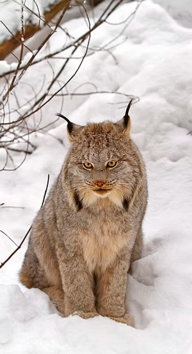

What to bring
Bring your Newfoundland and Labrador driver's licence number or NL photo identification number. No other ID is accepted for the Wildlife Division information system.

NLTA provides information on trapper education requirements, course details, registration, and support for new and returning trappers.
Trapper education is a mandatory pre-requisite for licensing of most beaver and general trappers in Newfoundland and Labrador.
All beaver and general trappers must complete trapper education unless they were born before September 30, 1926, and held a trapping licence at least once since the 1992/93 season.
The course includes a full day of classroom instruction, beginning at 8:00am and finishing around 6:00pm. It includes the Atlantic Canada Trapper Education Student Manual and a mandatory exam.
The exam contains fifty multiple choice and true/false questions, and an 80% score is required to pass.
Bring your Newfoundland and Labrador driver's licence number or NL photo identification number. No other ID is accepted for the Wildlife Division information system.
$150 for adults and $80 for youth ages 12–17, including the student manual.
Additional practical sessions and field days are offered periodically to successful course participants. Students are contacted when these opportunities become available.
For course registration questions, contact NLTA by email at nltapresident2026@hotmail.com.